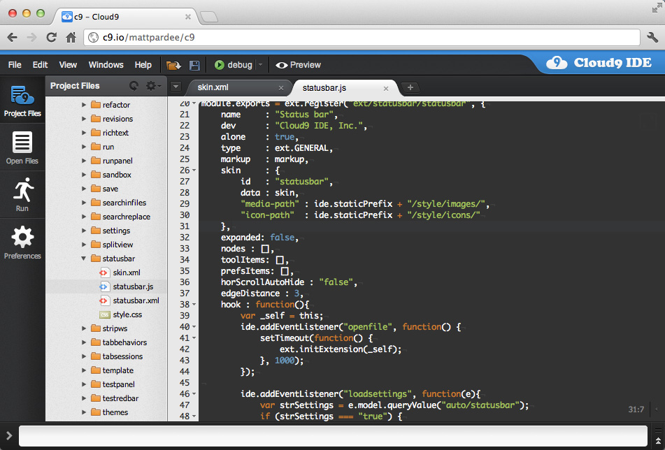
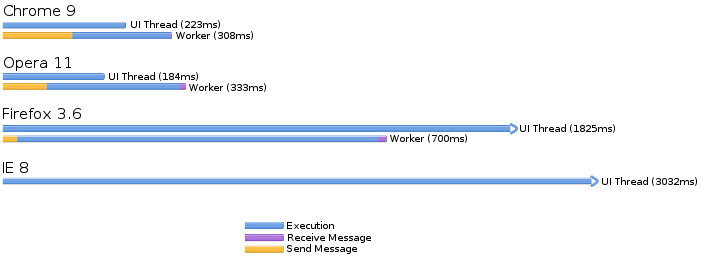
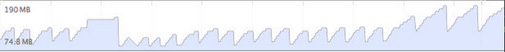

10 Web App Performance Pitfalls
@hoxton-one
@hoxton-one

- JS
- CSS
- HTML
Avoid convenience methods
(especially when using shims)
(especially when using shims)
// slow
longArray.forEach( doSomething );
// fast
var length = longArray.length;
for( var i = 0; i < length; i++ ) {
doSomething( longArray[ i ] );
}
Actively manage the component lifecycle
// when widget is first needed
var widget = new Widget()
widget.init = function() {
// create connection
}
// when widget is hidden
widget.hide = function() {
// pause connection
}
// when widget is shown
widget.show = function() {
// resume connection
}
Energetic Templating
// Repeats ( Angular )
scope.listBoundToNgRepeat = serverFetch()
// Markup choice ( Angular )
{{ expression }}
Dirty Checking
// Inline function calls
<span ngBind="computeContent()"></span>
// Polling
setInterval( function() {
//check if something needs to be done
}, 100 );
"So the real question is this: can you do 2000 comparisons in 50 ms even on slow browsers? That means that you have 25 µs per comparison. I believe this is not an issue even on slow browsers these days. There is a caveat: the comparisons need to be simple to fit into 25 µs."
Misko Hevery
WebWorkers - Overhead vs Benefit

blog.scottlogic.com
Work with your compiler, not against it
// Try Catch
try {
//do something
} catch( e ) {
// error occured
}
// Accessing items that is out of index bounds
var anArray = [ 'apple', 'oranges', 'kiwis' ];
anArray[ 10 ];
Recycle your garbage
// Don't create instances for one off functions
for( var i=0; i < length; i++ ) {
( new Calculator() ).add( i, 1 );
}
// Recycle objects
for( var i=0; i < length; i++ ) {
sterni = new Bottle(); //instead Bottles.get();
sterni.fill();
sterni.drink();
sterni.destroy(); //instead sterni.recycle();
}

CSS composition vs Render layer
 http://csstriggers.com/
http://csstriggers.com/
// This doesn't go down well in older IE's
.class:hover {
//css rules
}
// This leaked memory in versions of chrome
.class {
background: linear-gradient( ... );
}
Batch DOM updates
detachedElement = $( elementToModify ).detach();
mofifyElement( detachedElement );
parentElement.append( detachedElement );
http://jsperf.com/for-loop-vs-foreach-vs-foreach-shim/5
https://developers.google.com/web/fundamentals/performance/rendering/stick-to-compositor-only-properties-and-manage-layer-count
http://csstriggers.com/
https://developers.google.com/web/fundamentals/performance/rendering/stick-to-compositor-only-properties-and-manage-layer-count
http://csstriggers.com/